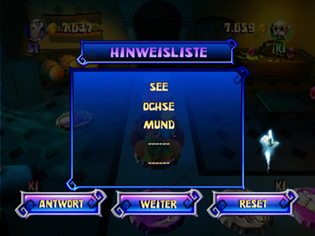
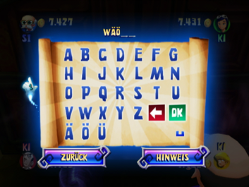

12 |
Hinweise, Schriftrollen und Zielgerade |
 |
Bildschirm Schriftrolle kaufen Wenn die Kutsche ein Schriftrollenfeld passiert, kann eine magische Schriftrolle geöffnet werden. Nachdem die Gruppe für das Öffnen der Schriftrolle bezahlt hat, gibt diese einen Hinweis preis. Falls sich die Gruppe entschließt, die Schriftrolle nicht zu öffnen, wird die Position der nächsten Schriftrolle angezeigt und die Kutsche bewegt sich auf dem Spielbrett weiter. Jede neue Schriftrolle ist teurer als die vorhergehende: Niveau Leicht
Niveau Normal
Niveau Schwer
Bildschirm Neuer Hinweis Nachdem eine Schriftrolle geöffnet wurde, erscheint dieser Bildschirm, auf dem der neue Hinweis angezeigt wird. Bildschirm Hinweisliste  Dieser Bildschirm wird im Anschluss an den Bildschirm Neuer Hinweis angezeigt. Mithilfe der hier angezeigten, bereits gefundenen Hinweise kann versucht werden, über das Antwort-Feld das mögliche Passwort einzugeben. Es kann aber auch einfach über das Weiter-Feld das Spiel fortgesetzt oder über das Reset-Feld die aktuellen Hinweise und das aktuelle Passwort gelöscht werden. Das Löschen kostet 200 Münzen. Aber Vorsicht: Ist nicht genügend Geld verfügbar, kannst du kein Reset durchführen: Du musst die Antwort erraten oder weiterspielen, um mehr Geld zu sammeln! Bildschirm Passwort eingeben  Wird im Bildschirm Hinweisliste das Antwort-Feld gewählt, erscheint der Bildschirm Passwort eingeben. Hier kann ein Spieler versuchen, das richtige Passwort einzugeben oder zum Spielbrett zurückkehren, um weiterzuspielen. Über das Hinweis-Feld können die Hinweise aufgerufen werden. Bildschirm Falsches Passwort! Sollte ein falsches Passwort eingegeben werden, wird die Position der nächsten Schriftrolle angegeben und die Gruppe muss 200 Münzen Strafe zahlen. Wenn bereits alle 5 Schriftrollen gefunden und geöffnet wurden, muss ein weiterer Versuch unternommen werden, das richtige Passwort zu erraten. Für 200 Münzen können über das Reset-Feld auch alle Hinweise und das aktuelle Passwort gelöscht werden. Bildschirm Glückwunsch! Wird das korrekte Passwort eingegeben, erscheint der Bildschirm Glückwunsch!; dann folgt ein letztes Minispiel. Zielgerade Nachdem die Gruppe den Schatz gefunden hat, beginnt das letzte Minispiel, Zielgerade, das dem Minispiel Schnell, lauf! sehr ähnlich ist (mehr Infos dazu in der Rubrik Minispiele unter Modus Minispiele). Bei beiden wird die Wii-Fernbedienung in waagrechter Position gehalten, und das Drücken des 2-Knopfes löst einen Wirbelangriff aus. Es gibt allerdings einige grundsätzliche Unterschiede zwischen den beiden Minispielen (u.a. die Karte). Weitere Unterschiede zwischen den Minispielen Zielgerade und Schnell, lauf!: 1. Spielfiguren, die von Geistern berührt werden, verlieren einige Münzen, aber bleiben im Spiel. 2. Die Spielfiguren werden von Rittern angegriffen und verlieren einige Münzen, wenn sie getroffen werden. 3. Der Startbetrag einer Spielfigur ist die Gesamtanzahl der Münzen, die sie im gesamten Spiel gesammelt hat. |
 |
 |
 |